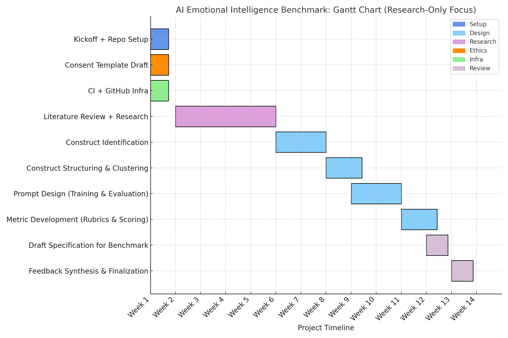

Our Research
See the README for an overview of the theoretical foundations that inform our methodology.

Phase 1: Interdisciplinary Literature Review and Construct Identification
Goal
Establish a theoretical foundation for EQ benchmarking through literature synthesis.
Methodology
- Systematic reviews across Philosophy, Psychology, Neuroscience, Computer Science
- Database creation detailing constructs, definitions, measurement methods, SERA-X axes alignment
Phase 2: Construct Refinement
Goal
Refine and validate constructs through interdisciplinary review.
Methodology
- Interdisciplinary workshops and Delphi method
- Peer-reviewed qualitative validation and roundtable discussions
Phase 3: Development of Benchmarking Methodology
Goal
Establish standardized assessment methods for emotional intelligence.
Methodology
- Standardized protocols for each SERA-X axis (Sensing, Explaining, Responding, Adapting, Extended)
- Comprehensive evaluation rubric development
Phase 4: Empirical Pilot Testing and Iterative Refinement
Goal
Empirically validate and refine benchmarking methodology through practical evaluations.
Methodology
- Empirical testing on diverse AI platforms
- Quantitative data (accuracy, fairness metrics) and qualitative data (user experiences)
- Mixed-methods iterative refinement
Ethical Considerations and Transparency
- Regular ethical review and IRB approval
- Detailed methodological transparency and reproducibility